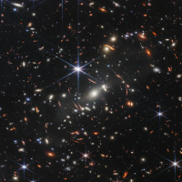

Sobre o telescópio
O Telescópio Espacial James Webb, sucessor do Hubble, é uma maravilha da engenharia e da astronomia moderna. Lançado em 25 de dezembro de 2021, este observatório espacial foi projetado para estudar o universo em infravermelho, permitindo aos cientistas observar as primeiras galáxias formadas após o Big Bang e investigar potenciais atmosferas de exoplanetas. Com sua capacidade sem precedentes, o James Webb abre novas fronteiras na compreensão do universo.
Nebulosas

Aglomerado de galáxias